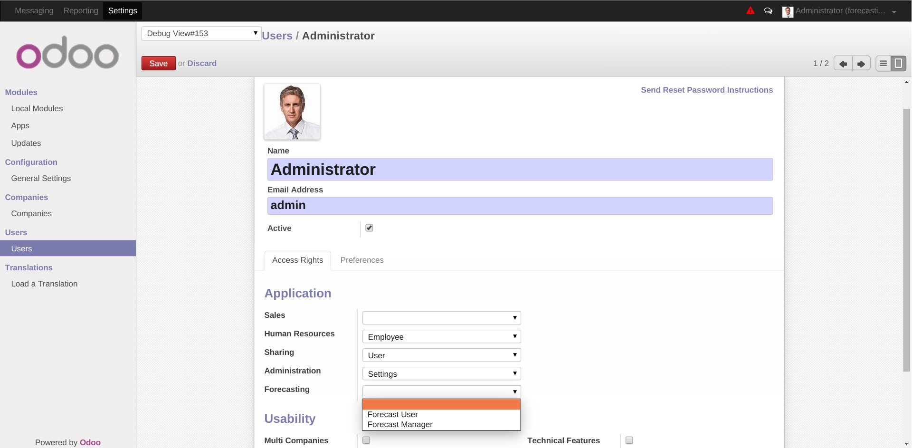
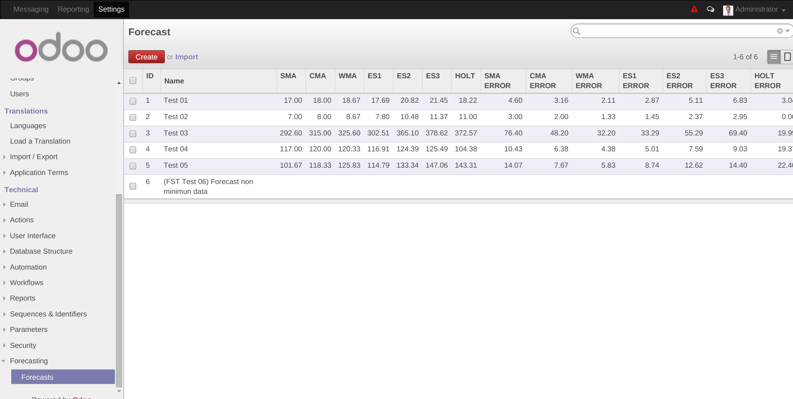

Forecasting by Smoothing Techniques
Data collected over time is likely to show some form of random variation.
"Smoothing techniques" can be used to reduce or cancel the effect of these
variations. These techniques, when properly applied, will
smooth
out the
random variation in the time series data to reveal any underlying trends that
may exist.
NOTE : This module add a calculator to odoo that simulate the application in this link
Installation
To install this module, you need to:
- Download this module from Vauxoo/stock-forecasting
- Add the repository folder into your odoo addons-path.
-
Go to
Settings > Module listsearch for the current name and click inInstallbutton.
Configuration
To configure this module, you need to:
- There is not special configuration for this module.
Usage
To use this module, you need to:
-
You need to set the Forecasting permission for your user to be able to use this module new features. Go to
Settings > Users > Usersmenu and select your user from the list view. In the the user form view activate theForecastingpermission as User or Manager. -
Go to a
Settings > Technical > Forecastingmenu. There you will find theForecastsubmenu that will show you a list view with all the Forecast Records. There you just simply can check or create a new forecasting. Forecasting list view have the forecastIDandnamefor quick identification, forecasting parameters, and some columns with a brief result summary.
-
Also, you could go to a
Productsform view and click on theForecastingbutton at the top right of the form.
-
When click over a Forecasting record o over the
Createbutton will take you to the Forecasting Form View. This view show up at the top the basic forecast data and some buttons:-
Reset Details: Reset the default parameters of the forecasting. -
Clear: Clear the forecasting incomming data values. -
List of Values: Go to the list of the forecating incomming data so you can edit them. Also you can see a table with all the forecasting results per data point (detail results).
In the first view of the forecasting form view you can view a graph with the results of all the forecasting methods applied over the data you sumbit.
-
-
In a more complete view of all the forecasting form view you can review the total forecasting summary and the forecasting methods paramters to configure to run the forecasting. If you have any doubt there is an explanation about every forecasting methods so will be more easy to use.
-
When editing the forecast values (Click over the
List of Valuesbutton) you can observe all the values in the table with all the detail forecasting results per data point with the mathematical absolute error (MAE).
-
To edit the list of values just click over the value in the forecasting data
list view to go tothe form view and edit the values. You can edit the
Sequence and the Value itself indicating in the
Data Informationsection. As you can check all theForecaasting Resultsfor this particular point can be also review in the form view, this results fields are not editable only readonly.
For further information, please visit:
Known issues / Roadmap
- There is not known issues.
Bug Tracker
Bugs are tracked on GitHub Issues . In case of trouble, please check there if your issue has already been reported. If you spotted it first, help us smashing it by providing a detailed and welcomed feedback here
Credits
Contributors
- Nhomar Hernandez < nhomar@vauxoo.com > (Planner/Auditor)
- Maria Gabriela Quilarque < gabriela@vauxoo.com > (Planner)
- Katherine Zaoral < kathy@vauxoo.com > (Developer)